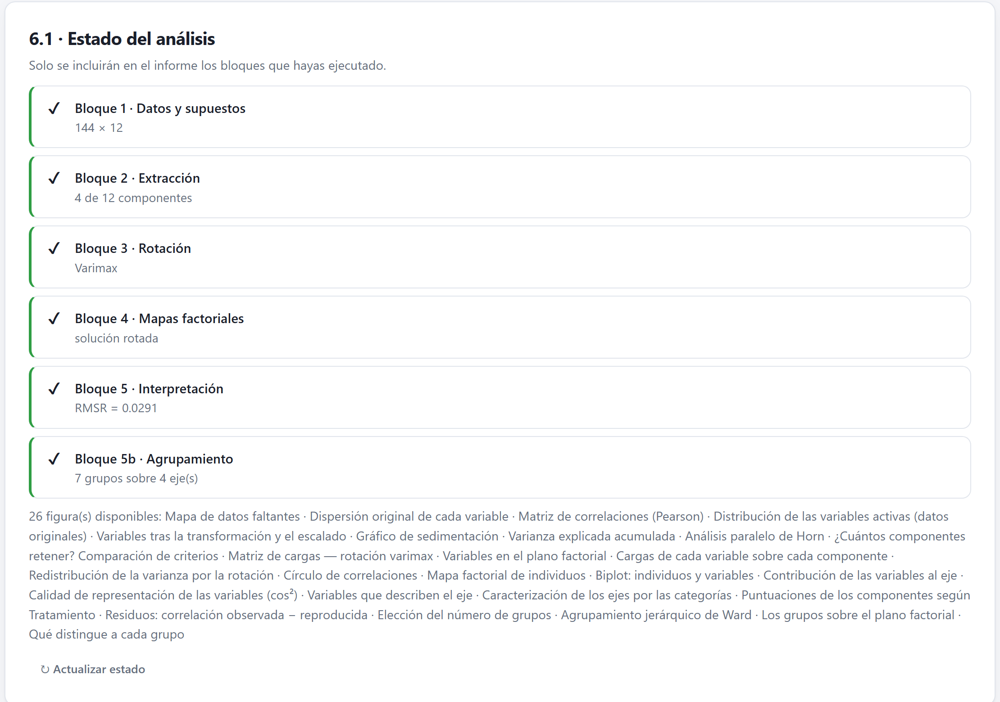
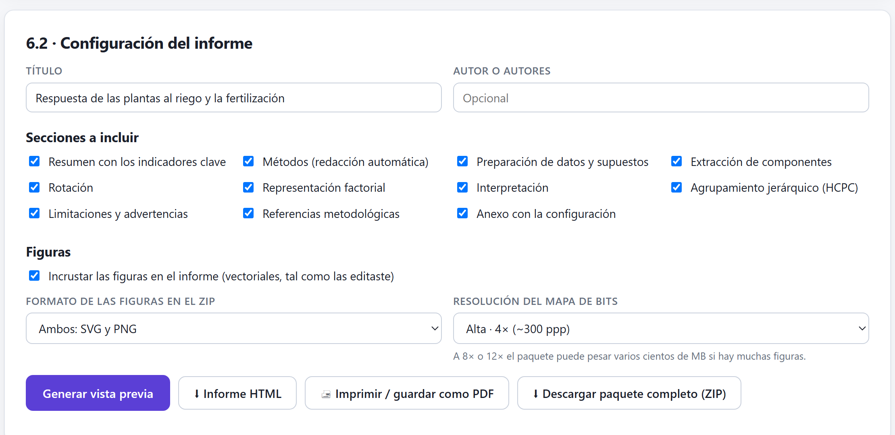
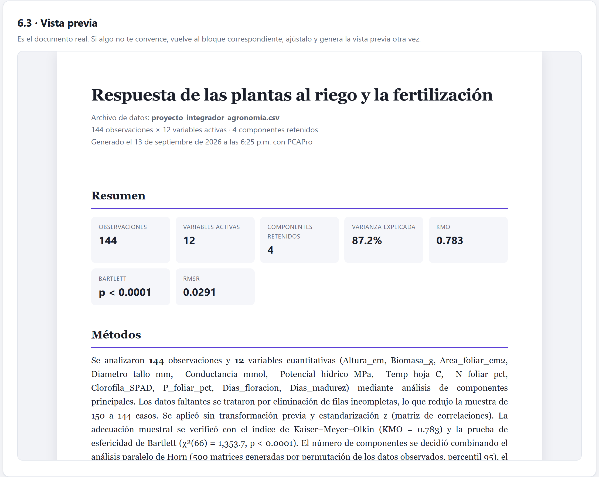

El último bloque reúne todo lo calculado en un informe HTML autocontenido, que también se imprime a PDF, y en un paquete ZIP con las figuras, las tablas en CSV y la cita del programa. Este capítulo explica qué contiene cada pieza, qué revisar antes de usarla y cómo redactar la sección de métodos.
El informe no recalcula nada: recoge lo que ya hiciste en los bloques anteriores, con las decisiones que tomaste y las figuras tal como las dejaste. Por eso conviene llegar a este bloque con el análisis terminado.
El Bloque 6 se activa al interpretar en el Bloque 5 o al agrupar en el 5b, y basta con haber extraído en el Bloque 2 para generar un informe. Tiene una tarjeta de teoría y cuatro tarjetas: 6.1 · Estado del análisis, 6.2 · Configuración del informe, 6.3 · Vista previa y 6.4 · Cómo citar PCAPro.

| Bloque | Con el ACP | Con otros métodos |
|---|---|---|
| Bloque 1 · Datos y supuestos | Observaciones × variables activas. | Igual. |
| Bloque 2 | «4 de 12 componentes». | Con la sigla del método: «2 de 6 ejes». |
| Bloque 3 · Rotación | El método, o «sin aplicar». | «no aplica a este método», con ✔. |
| Bloque 4 · Mapas factoriales | Solución rotada o sin rotar. | La inercia del plano 1–2. |
| Bloque 5 · Interpretación | El RMSR. | Cuántos ejes se describieron. |
| Bloque 5b · Agrupamiento | Grupos y ejes usados, o «opcional, sin ejecutar». | |
Debajo se listan las figuras disponibles: todas las que están montadas en tarjetas visibles de los bloques, en el orden de la app. Las de tarjetas ocultas —por ejemplo, las del ACP después de ejecutar otro método— no entran. Si cambias algo en otro bloque, pulsa ↻ Actualizar estado; el estado también se actualiza al abrir el bloque desde la barra de pasos o con el botón Ir al informe → del Bloque 5 del ACP. Si llegas desde el agrupamiento o desde otro método, pulsa ↻ Actualizar estado antes de generar el informe.
Las secciones de bloques que no se ejecutaron se desmarcan y se atenúan en la tarjeta 6.2: con otros métodos, la de Rotación; sin agrupamiento, la de Agrupamiento. En la versión 1.1, si después ejecutas ese bloque y actualizas el estado, la casilla vuelve a estar disponible pero sigue desmarcada: márcala a mano antes de generar el informe.
La tarjeta 6.2 · Configuración del informe define el título, los autores, las secciones y las figuras.

| Opción | Qué hace |
|---|---|
| Título · Autor o autores | Encabezan la portada. Sin título, se usa el nombre del método; el autor es opcional. |
| Secciones a incluir | Once casillas (tabla 9.3). La cita del programa se añade siempre al final. |
| Incrustar las figuras en el informe | Inserta cada figura en SVG dentro del HTML, con la edición que le hiciste. Sin ella, el informe solo lleva texto y tablas. |
| Formato de las figuras en el ZIP · Resolución del mapa de bits | Solo afectan al paquete ZIP (sección 9.3). |
| Sección | Contenido |
|---|---|
| Resumen | Indicadores: observaciones, variables, componentes, varianza, KMO, Bartlett y RMSR; con otros métodos, individuos, columnas, ejes, inercia y, en el AC, la χ². |
| Métodos | Un párrafo redactado con tus parámetros (sección 9.4). |
| Preparación de datos y supuestos | Descriptivos con la MSA, una tabla de verificación de supuestos con «Sí», «No», «Marginal» o «Revisar», y las figuras del Bloque 1. |
| Extracción | Valores propios, número propuesto por cada criterio, la decisión adoptada y las figuras del Bloque 2. |
| Rotación | Método, estructura simple, matriz de cargas rotadas (o de patrón) con las cargas sobre el umbral en negrita, varianza antes y después, Φ si es oblicua, y las figuras. |
| Representación factorial | Coordenadas, cos² y contribuciones, suplementarias y centroides, y las figuras del Bloque 4. |
| Interpretación | La lectura de cada componente con su nombre, los valores test, la comparación de grupos, el RMSR, las figuras y el borrador de resultados del Bloque 5. |
| Agrupamiento (HCPC) | El borrador del 5b, los criterios, la composición, los descriptores, paragones y específicos, y sus figuras. |
| Limitaciones y advertencias | Una lista generada con los problemas detectados: razón n:p < 5, KMO < 0.60, Bartlett no significativa, pares redundantes, atípicos, asimetría, RMSR ≥ 0.08, contrastes descriptivos, silueta < 0.25 y criterios de grupos que discrepan. |
| Referencias metodológicas | Catorce referencias fijas: Pearson, Hotelling, Kaiser, Horn, Cattell, Velicer, Jennrich, Ward, Husson y colaboradores, entre otros. |
| Anexo con la configuración | Los parámetros del análisis: archivo, filas, variables, faltantes, transformación, escalado, componentes, análisis paralelo, rotación y umbral. |
Las tablas y figuras se numeran solas en el orden en que aparecen. Los pies de figura usan el título que cada figura tiene en su editor, así que un buen título en el editor es un buen pie en el informe.
| Botón | Qué hace |
|---|---|
| Generar vista previa | Muestra el informe en la tarjeta 6.3 y avisa cuántas secciones y figuras incluyó. |
| ⬇ Informe HTML | Descarga un único archivo …_informe_ACP.html, sin dependencias: se abre en cualquier navegador y se envía por correo. |
| 🖨 Imprimir / guardar como PDF | Abre el informe en una ventana nueva y lanza la impresión. Elige «Guardar como PDF». Si el navegador bloquea ventanas emergentes, la app lo avisa: descarga el HTML y imprímelo desde ahí. |
| ⬇ Descargar paquete completo (ZIP) | Genera el paquete de la sección 9.3. |

El informe se construye con el estado de la app al pulsar el botón. Si vuelves a un bloque y cambias algo, genera la vista previa otra vez antes de descargar. Y recuerda que recalcular un bloque regenera sus figuras con los valores por defecto (sección 6.6): haz las ediciones finales de las figuras justo antes de generar el informe.
⬇ Descargar paquete completo (ZIP) genera, en el propio navegador, un archivo …_ACP_completo.zip con esta estructura. El botón va mostrando el avance figura por figura y, al terminar, un mensaje dice cuántos archivos y megabytes tiene.
| Formato | Resultado |
|---|---|
| Ambos: SVG y PNG (por defecto) | Cada figura dos veces: vectorial y en mapa de bits. |
| PNG, JPG o WEBP | Solo mapa de bits, a la resolución elegida (2× a 12×), con fondo blanco. |
| SVG | Solo vectorial; la resolución no aplica. Es el paquete más ligero. |
| Nº | ACP | AC, ACM, AFDM y AFM |
|---|---|---|
| 01–03 | Matriz preparada (con suplementarias y cualitativas), correlaciones y resumen de variables con MSA. | |
| 04 | Valores propios con p95 aleatorio y bastón roto. | Valores propios e inercia (en el ACM, con el % de Greenacre). |
| 05–06 | Cargas sin rotar y puntuaciones. | Coordenadas, cos² y contribuciones de columnas y de filas. |
| 07–09 | Cargas rotadas; estructura y Φ si es oblicua. | Propias del método: celdas de la χ² (AC), v de Cramér (ACM), r² y η² (AFDM), inercia de bloques, RV y puntos parciales (AFM). |
| 10–11 | Coordenadas, cos² y contribuciones de variables e individuos. | — |
| 12–14 | Descripción de dimensiones, valores test y residuos. | Descripción de ejes y valores test. |
| 20–23 | Si hubo agrupamiento: asignación, criterios por número de grupos, descripción y paragones. | |
Los CSV van en UTF-8 con BOM y separados por comas, para que Excel reconozca los acentos. Con el proyecto integrador y los seis bloques, el paquete tiene 16 tablas, 26 figuras en SVG y PNG, el informe, la cita y el LEEME: 71 archivos.
| Si el paquete es para… | entonces |
|---|---|
| Archivar el análisis o compartirlo con coautores | SVG y PNG a 4×, las opciones por defecto. |
| Enviar las figuras a una revista | SVG, o PNG a 8×. Revisa antes el peso: con muchas figuras, 8× y 12× pueden llegar a cientos de MB. |
| Un correo o una presentación | PNG a 2×, o solo el informe HTML. |
El ZIP se guarda sin compresión para no depender de librerías externas: si pesa demasiado, comprímelo después con tu sistema operativo.
La sección Métodos del informe es un párrafo con tus parámetros. Con el ACP describe la muestra y las variables, el tratamiento de faltantes, la transformación y el escalado, KMO y Bartlett, los criterios de retención, la rotación, el umbral y, si lo hubo, el agrupamiento. Con los otros métodos describe la tabla, la codificación, la inercia y los criterios empleados.
listwise, none, z. Tradúcelos si publicas el anexo.«Se analizaron 144 parcelas y 12 variables cuantitativas mediante análisis de componentes principales; las 6 parcelas con datos faltantes se eliminaron. Las variables se estandarizaron (z), sin transformación previa. La adecuación de los datos se verificó con el índice KMO (0.783) y la prueba de esfericidad de Bartlett (χ²(66) = 1353.7, p < 0.0001). Se retuvieron cuatro componentes, número en el que coincidieron el análisis paralelo de Horn (500 permutaciones, percentil 95), el bastón roto y el MAP de Velicer, y se rotaron con varimax y normalización de Kaiser; se interpretaron las cargas con |r| ≥ 0.40. El rendimiento se proyectó como variable suplementaria. Sobre los cuatro componentes se aplicó un agrupamiento jerárquico de Ward consolidado por k-medias (Husson, Josse y Pagès, 2010). Los análisis se realizaron en PCAPro, versión 1.1.0 (Barrera-Guzmán, 2026).»
| En lugar de… | escribe… |
|---|---|
| «Los factores explican…», en un ACP | «Los componentes…»: el análisis factorial es otro modelo. |
| «El ACP demostró que los tratamientos difieren» | «Los tratamientos se situaron en zonas distintas del plano», y la prueba que usaste (MANOVA, PERMANOVA). |
| «CP1 explica la altura» | «La altura se asocia con CP1 (r = 0.92)». |
| Porcentajes de cada componente con rotación oblicua | La varianza conjunta y las cargas de patrón (sección 5.2). |
| Grupos con valores p como prueba de que existen | La silueta, el acuerdo de las reglas y que los valores test describen (sección 8.5). |
| Nada sobre el preprocesamiento | Faltantes, transformación y escalado: cambian el resultado. |
La tarjeta 6.4 · Cómo citar PCAPro muestra la referencia con los botones ⧉ Copiar referencia y ⧉ Copiar BibTeX. Es la misma que aparece al final de cada informe y en el archivo CITATION.bib del paquete. La referencia usa el DOI de concepto, que apunta siempre a la versión más reciente; si tu revista pide la versión exacta, usa el DOI de la versión (sección 2.4).
Con el informe se cierra el recorrido por los bloques. Los apéndices reúnen los formatos de archivo, las reglas de decisión, el glosario, la solución de problemas, la verificación de los cálculos y las referencias.